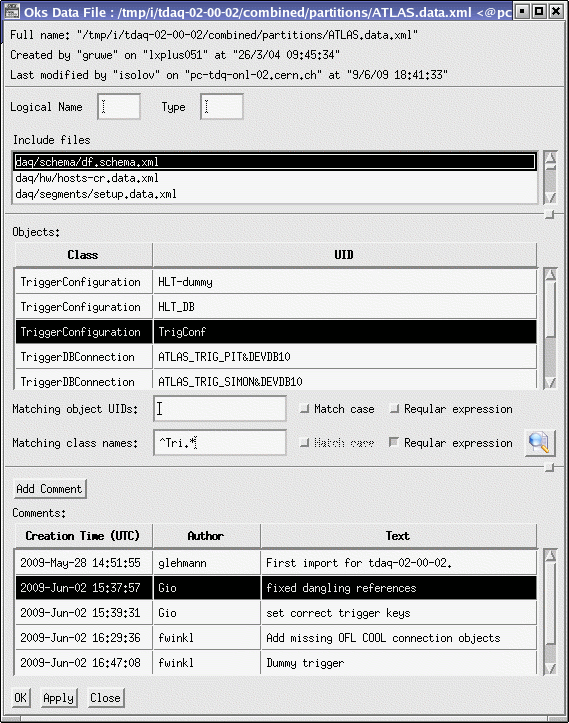

OKS Data Editor
Data File Window
The
data file window allows to browse and to modify list of files included
by given data file, to access list of objects in the file, to add,
remove and browse comments stored on the file.

Include Files
A data files has to be consistent from included files point of
view.
This means, all required schema files and data files with objects
referenced by objects of given file have to be included.
To modify included files select a file and / or press right mouse
button
on the include files list box. A popup menu similar to shown below one
will appear:
The actions of the popup window are listed below:
- [Show] action opens data file window of included file (it
is
disabled for schema file).
- [Add From] action allows to add include file from
TDAQ_DB_PATH,
TDAQ_DB_REPOSITORY, TDAQ_DB_USER_REPOSITORY and working areas. When a
file is selected from file selection dialog, the prompt dialog proposes
to strip it's name. The recommendation is always to strip the file
name, since inclusion of files with absolute paths makes database
hardly supportable. When OKS server is used, the inclusion of files
with absolute filenames is not allowed. If a file is successfully
included and it was not yet loaded by the editor, it is automatically
loaded.
- [Remove] action removes selected include.
- [Rename] action allows to change name of include.
Objects
It is possible to show, to select and to delete an object using the
objects table as shown below:
Also, it is possible to see only objects belonging to certain classes
and/or having certain identities. To do this use matching class names
and object UIDs selection panels below the objects table.
Comments
The comments should contain description of file modifications. It is
always possible to add a comment using [Add Comment] push button
located above the comments table.
It is possible to see or to to delete an existing comment using the
comments table as shown below:
Note, when OKS server is used it is more
important to put the comments on commit. Any comments stored on file
after last commit are automatically added in the OKS server commit
window.
Home - Previous
- Next - Index
Modified 10-JUN-2009
Author Igor Soloviev